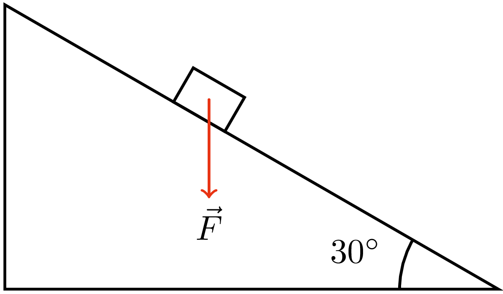
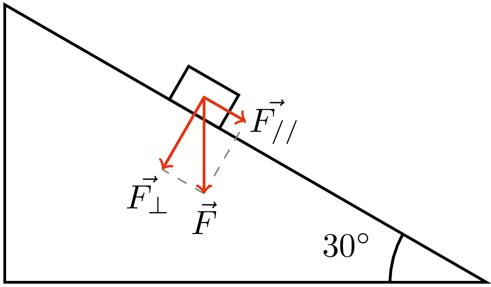

Un blocco di massa 3 kg si trova su un piano inclinato di 30° rispetto all'orizzontale. Calcola la sua accelerazione.
Soluzione:
Come primo passo, è necessario disegnare uno schema dove
rappresentiamo le forze che agiscono sul corpo.
In questo caso c'è solo la forza peso:

A questo punto si scompongono le forze
nelle componenti parallele e perpendicolari al piano:

L'accelerazione lungo il piano è dovuta alla sola componente parallela della forza,
che si può calcolare con:
\begin{align*}
F_{//} &= m\: g\: sen(\alpha) = \\[10pt]
&= 3\ kg \cdot 9{,}81\ \tfrac{N}{kg} \cdot sen(30°) = \\[10pt]
&= 14,72\ N
\end{align*}
Infine, si può calcolare l'accelerazione con la seconda legge di Newton:
\begin{align*}
F_{//} &= m\: a \\[10pt]
a &= \frac{F_{//}}{m}=\\[10pt]
&= \frac{14{,}72\ N}{3\ kg}=\\[10pt]
&= 4{,}91 \tfrac{m}{s^2}
\end{align*}